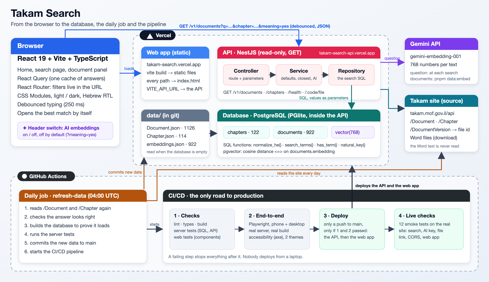

הבעיה: אדם שיש לו מצב קונקרטי לא מצליח להגיע בוודאות להוראת תכ"ם שחלה עליו, כי החיפוש באתר הוא "מכיל" פשוט על כותרת, תיאור, מילות מפתח ומספר. הפתרון: מסד נתונים מקביל בבעלותנו, ו-API חיפוש אמיתי מעליו שנכתב ב-SQL. בסוף הוספתי AI: כפתור בכותרת העליונה שמדליק חיפוש לפי משמעות (embeddings ב-pgvector). הכול ב-TypeScript, ב-monorepo אחד, עם בדיקות בכל שכבה וצנרת אחת שפורסת רק אחרי שהכול עבר.
אתר הוראות תכ"ם (takam.mof.gov.il) הוא המקום שבו עובדי משרדי הממשלה מחפשים את ההנחיות המחייבות של החשב הכללי. השתמשתי באתר, קראתי את הקוד שלו וקראתי ל-API הציבורי שלו (1,126 מסמכים, 114 פרקים):
/document/undefined וחלונית הפרטים נשארת ריקה.isvalid הוא true דווקא ב-51 מסמכים שתוקפם פג, והאתר מסתיר זאת בקוד./api/Chapter./api/Tag ריק.האתגר: אדם עם מצב קונקרטי, למשל "מה עושים אם חרגנו מהתקציב?", לא מצליח להגיע בוודאות להוראה שחלה עליו. בקוד האתר (filterByFreeTxt) הטקסט החופשי מושווה לארבעה שדות בלבד באמצעות "מכיל" פשוט: מילה חייבת להיכתב בדיוק כמו בכותרת.
| מה מקלידים | מה האתר עושה |
|---|---|
| קופת ביטחון, ואחר כך קופות ביטחון | 2 תוצאות ואז 4: היחיד לא מוצא את הרבים |
| התחייבות, ואחר כך התחייבויות | 11 תוצאות ואז 5 |
| מקדמות ללא התחייבות | 0 תוצאות, למרות שההוראות על מקדמות (1.4.5) ועל תשלומים ללא התחייבות (1.5.1) קיימות |
| מה עושים כשיש חריגה | 0 תוצאות: שאלה היא לא כותרת |
| כל חיפוש בלי תוצאה | הכתובת הופכת ל-/document/undefined והדף נשאר ריק |
על מי זה משפיע: עובדי משרדי הממשלה שחייבים ליישם את ההוראות. למה כדאי לפתור: זו הדרך שבה כמעט כל משתמש מגיע להוראה, ואם החיפוש לא מוצא, ההוראה הנכונה פשוט לא מגיעה אליו, ואז הוא מבזבז זמן או מיישם הוראה לא נכונה. (לא מדדתי את ההשפעה על משתמשים אמיתיים: זו השערה סבירה, לא מדידה.)
מסד נתונים מקביל, ו-API חיפוש אמיתי מעליו. האובייקטים של האתר מגיעים מ-Salesforce (המזהים והשדות שלהם הם של Salesforce: sfid, rtn_*__c). לדעתי Salesforce הוא מערכת רישום ולא backend של חיפוש: הוא בנוי לקרוא רשומות, לא לחיפוש מדורג, מודע לעברית או סמנטי, והוא מגיע עם מגבלות API. (זו הערכה שלי, לא מדידה של Salesforce.) האתר עצמו מראה את התוצאה: ה-API שלו מוסר לדפדפן את כל הרשימה והדפדפן מסנן. לכן העתקתי את האובייקטים למסד PostgreSQL בבעלותנו, מותאם לקריאה, ו-API ב-NestJS שעונה בשאילתות SQL שנכתבו למשימה הזאת בלבד.
חיפוש SQL מדויק על השדות שיש לנו. אותם מסמכים, אבל החיפוש בשרת, על עמודות מנוקות:
הכפתור כבוי כברירת מחדל, ואז החיפוש הוא החיפוש במילים. כשמדליקים אותו, השאלה הופכת ל-embedding (וקטור של 768 מספרים, מ-Gemini) והמסד מסדר את המסמכים לפי הקרבה למשמעות, בערבוב עם המילים: מספר הוראה ומונח מדויק עדיין מנצחים.
pnpm data:embed) שרץ ומחשב embedding לכל מסמך מהכותרת, התיאור ומילות המפתח, ושומר אותו בעמודה מסוג pgvector (documents.embedding) לכל 922 המסמכים. המשימה היומית מריצה אותו, וחוסכת: רק מה שחדש או ששונה נשלח ל-Gemini.AiService) וכל ספק הוא מחלקה נפרדת.השלב הבא, אם יש צורך: ליצור וקטורים גם מתוכן המסמכים עצמם (קובצי ה-Word, בחלקים) באותה עמודת pgvector, ולתת ל-AI לכתוב תשובה עם הפניה למקורות (RAG). זה כבר חיפוש מעמיק יותר, עם עלויות וסיכונים משלו (פענוח קבצים, גודל, תשובה שגויה בהקשר משפטי), ולכן השארתי אותו מחוץ ל-POC: כרגע החיפוש מתבסס על נתוני העל בלבד.

| חבילה | מה יש בה |
|---|---|
| apps/web | הלקוח: React 19 + Vite + TypeScript, React Query, React Router (הסינון חי בכתובת, כך שאפשר לשתף חיפוש), CSS Modules, עברית מימין לשמאל, מצב בהיר וכהה. מבנה הדפים כמו באתר המקורי. |
| apps/server | השרת: NestJS, תיקייה לכל route, ובכל אחת controller → service → repository, ותיקיית ai/ ל-AI. קריאה בלבד (GET). |
| packages/contracts | הטיפוסים המשותפים ללקוח ולשרת: צד אחד משתנה בלי השני, בדיקת הטיפוסים נכשלת. |
useState ו-useEffect ידניים. כל תשובה נשמרת לפי המפתח שלה (המסננים בחיפוש, מספר ההוראה), ולכן חזרה לחיפוש או להוראה שכבר נראו מוצגת מיד, בלי בקשה. תשובה נשארת "טרייה" 5 דקות, והפרקים לא נטענים שוב במהלך הביקור. בקשות זהות מתאחדות לבקשה אחת, בקשה ישנה מתבטלת כשהמשתמש ממשיך להקליד (יחד עם השהיה של 250 מילישניות), והרשימה הקודמת נשארת על המסך עד שהבאה מגיעה (keepPreviousData), כך שאין הבהוב של דף ריק. כשל בשרת נוסה שוב פעמיים, סירוב (4xx) לא, ומצבי הטעינה, השגיאה וה"ניסיון חוזר" באים מאותו מקור. התוצאה: ממשק מהיר ואינטואיטיבי, ופחות עומס על ה-API.chapters ו-documents ופונקציות SQL שמנקות עברית. הנתונים נטענים משני קובצי JSON, האובייקטים של האתר, ואת הווקטורים מקובץ שלישי.AiService (הבדיקות אף פעם לא קוראות ל-AI אמיתי), כל טקסט הממשק רק ב-messages.ts, כל הצבעים רק ב-tokens.css (ניגודיות AA בשני המצבים, נבדקת), מצב החיפוש בכתובת, והתיעוד מתעדכן באותו commit כמו הקוד.| רמה | מה נבדק | כמות |
|---|---|---|
| יחידה ו-API בשרת | פונקציות ה-SQL, הטעינה, שאילתת החיפוש על הנתונים האמיתיים בזיכרון, השירות, מודול ה-AI (ספק מזויף ו-fetch מזויף), הלקוח של אתר תכ"ם, וכל route מקצה לקצה | 141 |
| יחידה ורכיבים בלקוח | דפים מול API מזויף, כל רכיב, לקוח ה-API, טוקני העיצוב (ניגודיות AA) | 98 |
| קצה-לקצה (Playwright) | טלפון ושולחן עבודה, שרת אמיתי ו-build אמיתי, נגישות (axe) בשני המצבים | 108 |
| האתר החי | smoke tests אחרי כל פריסה | 12 |
מקרי קצה שנבדקים: תשובה ריקה, חיפוש של מילה אחת ושל שאלה, H.7.1.5 (שהאתר מסתיר), פרק 10 (שחסר באתר), יחיד ורבים, גרשיים, ניסיון הזרקה במילים, מסמך שלא קיים, מפתח AI חסר או AI שנכשל, אתר תכ"ם שנכשל, מזהה קובץ שגוי, CORS לקריאה בלבד, ומסך טלפון ושולחן עבודה.
צנרת אחת, ורק GitHub פורס: בדיקות (lint, טיפוסים, build, יחידה וכיסוי) ← קצה-לקצה ← פריסה ל-Vercel (רק מ-main ורק אחרי שהכול עבר) ← 12 בדיקות על האתר החי. אף אחד לא פורס ממחשב אישי.
השיקולים: החיפוש הוא המוצר, וכל השאר משרת אותו; הנתונים נמצאים ב-Salesforce שהוא מערכת רישום, ולכן מסד מקביל בבעלותנו; שרת פשוט שאפשר לעקוב בו אחרי בקשה בארבעה קבצים; ומה שמסוכן (ה-AI, אתר תכ"ם) יושב מאחורי מחלקה אחת ומתג. חלופות שבדקתי: חיפוש ב-Salesforce עצמו או סינון ברשימה המלאה בדפדפן; Elasticsearch (מערכת שנייה בשביל 922 מסמכים); SQLite או מסד מנוהל; RAG מהתחלה. על מה ויתרתי ב-POC: תוכן המסמכים ותשובה שה-AI כותב, מסד משותף ועמיד, דפדוף בלקוח, הרשאות, מילון עברי (הכללים כתובים ביד) ותגיות.
המסד חי בתוך תהליך ה-API ונבנה מחדש מקבצים ב-git בכל הפעלה. ההשלכות: הבקשה הראשונה אחרי הפסקה מחכה לבנייה (כ-3 שניות במחשב, 8 עד 10 ב-Vercel); נתונים חדשים מגיעים ל-API החי רק בפריסה; לכל מופע עותק משלו ולכן אי אפשר לכתוב; קובץ הווקטורים (9MB) נכנס ל-git; וכללי העברית וחלון הקרבה של חיפוש ה-AI כוונו ידנית על מדגם קטן. השינוי שהייתי עושה: PostgreSQL מנוהל עם pgvector (Neon, Supabase) דרך DATABASE_URL, כשהמשימה היומית היא הכותבת היחידה והווקטורים יושבים במסד ולא ב-git. רק DatabaseService משתנה, כי כל שאילתה כבר עוברת דרך query(). ובנוסף: אוסף שאלות אמיתיות עם ההוראה הצפויה כדי למדוד את החיפוש.
מה יקשה על מפתח אחר היום: שני פרויקטי Vercel, משתני הסביבה שלהם (CORS_ORIGINS, VITE_API_URL, GEMINI_API_KEY) וסוד ומשתנים ב-GitHub נוצרו ביד; ה-API נבנה בתוך apps/server ונפרס מהשורש כי נתיבי ה-build יחסיים לשורש; קובצי ה-binary של PGlite נקראים בנתיבים מפורשים כדי ש-Vercel יכלול אותם; והכול קשור ל-Vercel. מה כבר קיים: pnpm install && pnpm dev מריץ הכול בלי סוד, .env.example מפרט כל משתנה, והצנרת בודקת, פורסת ובודקת את האתר החי. מה הייתי משנה: תשתית כקוד (פרויקטי Vercel ומשתניהם במאגר, או Dockerfile שמתאים לכל מארח), סקריפט bootstrap שיוצר סביבה חדשה ומדפיס מה חסר, וגרסאות נעולות. איך מוודאים אחרי פריסה: 12 ה-smoke tests בשלב האחרון של הצנרת, ו-/health שמדווח כמה מסמכים ופרקים נטענו.
תרחיש: אתר תכ"ם משנה את מבנה הנתונים או שהוא למטה כשהמשימה היומית קוראת אותו. איך זה היה מתבטא: בלי הגנה, המסד היה נטען עם מסמכים בלי מספר, חיפוש לפי מספר לא היה מוצא כלום וה-API עדיין היה נראה תקין. איך מזהים ומטפלים היום: המשימה בודקת את התשובה (חייבת להיות רשימה, עם לפחות 900 מסמכים שיש להם מספר ו-100 פרקים), בונה מהקבצים החדשים מסד כדי להוכיח שהם נטענים, ומריצה את בדיקות השרת. אם משהו לא תקין היא עוצרת, שומרת את הקבצים הישנים, וריצה אדומה מופיעה ב-GitHub. ה-/health מדווח כמה מסמכים ופרקים נטענו, וה-smoke tests מכשילים את הצנרת אם הנתונים החיים לא נטענו. מה הייתי משנה: הודעה למישהו (לא רק ריצה אדומה), תאריך הקריאה האחרונה שהצליחה ב-/health, ועותק מתוארך של הקבצים הקודמים. תרחיש נוסף: Gemini נכשל או שהמכסה נגמרה: חיפוש ה-AI עונה 503 ברור, החיפוש במילים לא מושפע, והכשל נרשם ב-AiService.
pnpm install ואז pnpm dev (דרישות: Node ≥ 22 ו-pnpm 11). האתר ב-localhost:5173 וה-API ב-localhost:3100. אין צורך בסוד כדי להריץ.apps/server/.env (git מתעלם ממנו), כפי שמופיע ב-.env.example. אף סוד לא נמצא בקוד.pnpm test, pnpm test:coverage ו-pnpm test:e2e.apps/server/data/ (Document.json, Chapter.json, embeddings.json).